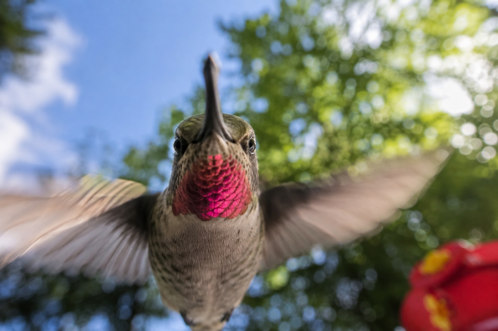
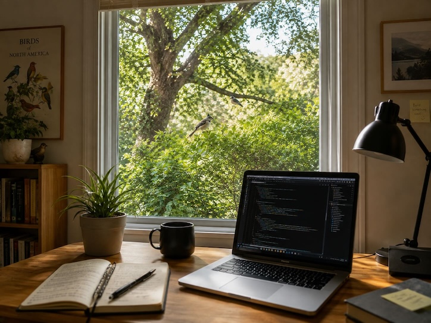
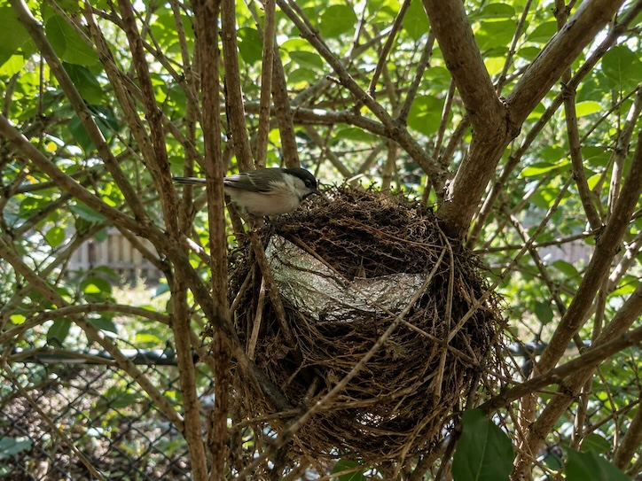
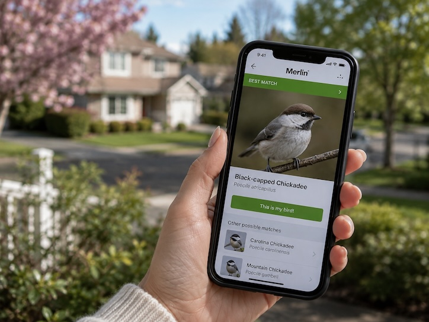

Birds

How I Came to Birding
In 2020, like many people, I began working from home full time for the first time. Our team had experimented with remote work for years—every Wednesday was a “work from home” day dedicated to uninterrupted coding with no meetings. When the pandemic arrived, that one day became every day.

Before long, I started noticing a tiny bird with a little mohawk landing in the bush only a few meters from my desk. Soon I realized it wasn't alone. Chickadees, finches, hummingbirds, and other small birds seemed to treat that corner of the yard like a busy neighborhood.
One detail constantly caught my eye: a small piece of crumpled tin foil lodged in the bush. It sat about seven feet off the ground on the other side of a wire fence, just far enough away that removing it wasn't practical. It became part of the scenery.

That little bush became my favorite distraction between meetings and coding sessions. Looking outside for a minute to see what the birds were doing became a surprisingly good way to reset my brain before diving back into work.
About a year later, travel restrictions eased and my Canadian passport was released from a year-long backlog, allowing me to visit my family again. When I mentioned my newfound interest in birds, my dad introduced me to Merlin, the free bird identification app from the Cornell Lab of Ornithology.

As a software engineer, I was excited to discover that Cornell also provides the eBird API. The API gives developers access to one of the world's largest biodiversity datasets, built from millions of bird observations submitted by birders across the globe.
This project was my opportunity to bring together two interests I never expected to overlap: building software and learning about birds. I hope it helps you discover some fascinating neighbors living just outside your own window.
Back Birds Near You